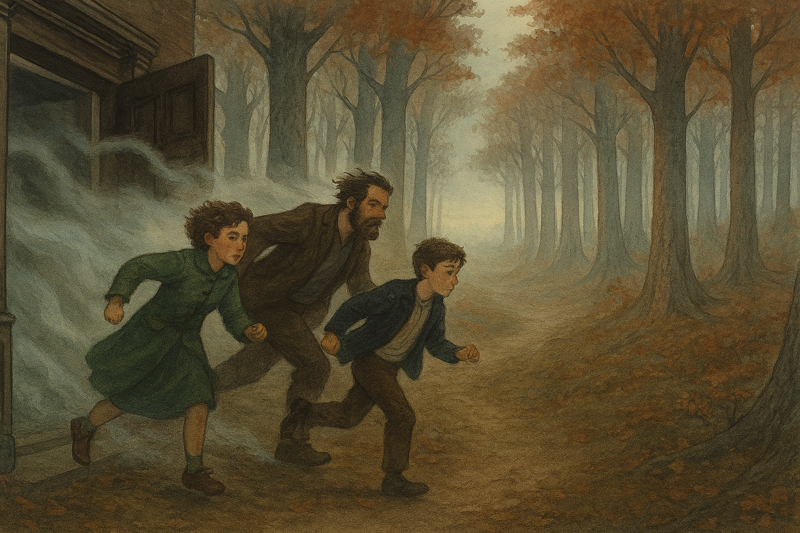
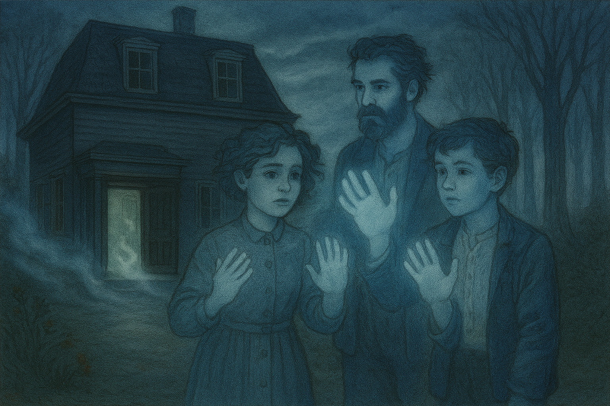

The three of them managed to run toward the front door, pursued by a freezing wind that roared like a wail. As they crossed the threshold, the air changed. Outside, it was no longer night, but a gray dawn. The forest stretched silently, but something didn't fit: the trees seemed larger, the path different.
They made their way to the town, seeking help, but the streets were no longer the same. The houses had been rebuilt, the signs had different names. In the shop windows, unfamiliar faces and signs reminiscent of decades past could be seen.
A feeling of unreality enveloped them. Looking at their own hands, they discovered they were translucent. The house hadn't let them go... it had only displaced them to another time, outside the world they knew.

The dawn continued, but they didn't feel it. The town continued living, unaware that three shadows walked tirelessly through its streets, searching for a place that no longer existed. 🕸️ They escaped from the house... but not from time.